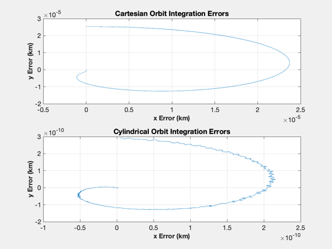

Investigate orbit coordinate systems.
Since version 1.
------------------------------------------------------------------------
See also FOrb, Constant, NewFig, TimeGUI, TitleS, XLabelS, YLabelS, RK4,
Period
------------------------------------------------------------------------
Contents
Global for the time GUI
global simulationAction
simulationAction = ' ';
Constants
mu = Constant('mu');
rE = Constant('Earth Radius Mean');
Simulate a circular orbit with an altitude of 200 km
rCirc = rE+200;
r = [rCirc;0;0];
v = [0;sqrt(mu/rCirc);0];
x = [r;v];
y = [[rCirc;0;0];[0;sqrt(mu/rCirc^3);0]];
nSim = 500;
xPlot = zeros(2,nSim);
yPlot = zeros(2,nSim);
aExt = [0;0;0];
period = 2*pi*sqrt(rCirc^3/mu);
dTSim = period/nSim;
t = 0;
Initialize the time display
tToGoMem.lastJD = 0;
tToGoMem.lastStepsDone = 0;
tToGoMem.kAve = 0;
ratioRealTime = 0;
[ ratioRealTime, tToGoMem ] = TimeGUI( nSim, 0, tToGoMem, 0, dTSim, 'TOrbit Sim' );
for k = 1:nSim;
[ ratioRealTime, tToGoMem ] = TimeGUI( nSim, k, tToGoMem, ratioRealTime, dTSim );
xPlot(:,k) = x(1:2);
yPlot(:,k) = y(1)*[cos(y(2));sin(y(2))];
x = RK4('FOrb',x,dTSim,t,'car',aExt,mu);
y = RK4('FOrb',y,dTSim,t,'cyl',aExt,mu);
t = t + dTSim;
switch simulationAction
case 'pause'
pause
simulationAction = ' ';
case 'stop'
return;
case 'plot'
break;
end
end
theta = linspace(0,2*pi*(1-1/k),k);
j = 1:k;
NewFig('Orbit Integration Error');
subplot(211)
plot(xPlot(1,j)-rCirc*cos(theta),xPlot(2,j)-rCirc*sin(theta));
XLabelS('x Error (km)');
YLabelS('y Error (km)');
TitleS('Cartesian Orbit Integration Errors');
grid
subplot(212)
plot(yPlot(1,j)-rCirc*cos(theta),yPlot(2,j)-rCirc*sin(theta));
XLabelS('x Error (km)');
YLabelS('y Error (km)');
TitleS('Cylindrical Orbit Integration Errors');
grid
